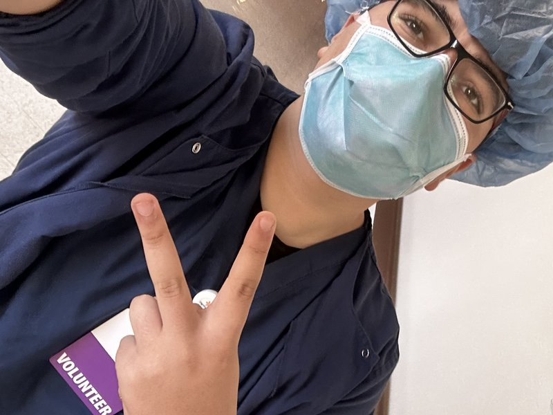
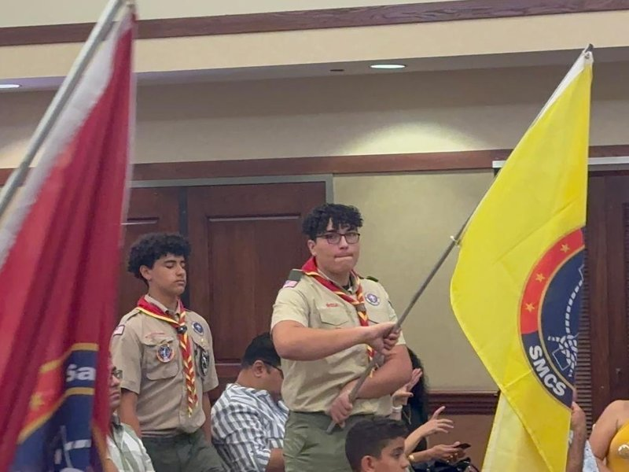
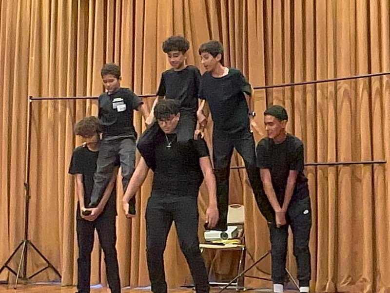
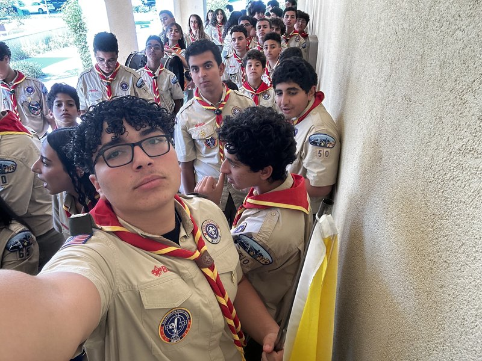

My name is Beshoy Alxan, and I am pursuing a Bachelor of Science in Biology at the University of California, Riverside, with an expected graduation date of June 2027. I began college early and earned my Associate in Science in Biology for Transfer from Chaffey College in May 2026. Starting college early challenged me to become more independent, organize my time, and take responsibility for my progress. Those habits continue to shape the way I approach my education and my long-term goals.
My goal is to become a pharmacist and earn a Doctor of Pharmacy degree. Western University of Health Sciences is my target pharmacy school. After shadowing family members in pharmacy settings, I became interested in a career that combines scientific knowledge with compassionate, hands-on patient care. I value the stability and responsibility of the profession, but I am especially drawn to the opportunity to help people understand their care. I want to build the knowledge and communication skills needed to make that responsibility meaningful.
Since 2023, I have volunteered at Dignity Health's Community Hospital of San Bernardino for approximately six hours each week. My experience has included exposure to more than 40 departments, including the ICU, NICU, Surgery, and Emergency Room. Seeing different hospital environments has broadened my understanding of healthcare and the teamwork behind it. It has also reinforced my interest in a career where attention, patience, and respect for others matter every day. I approach this experience as an opportunity to serve and learn, while respecting the boundaries of my volunteer role.
During summer 2023, I worked as a lifeguard at Fontana Park Aquatic Center. My work included teaching first aid, water safety, swimming, and basic emergency-response procedures. This experience connected my enjoyment of swimming with an important responsibility toward others. Explaining safety information helped me appreciate the value of clear instructions and a calm approach. Water safety remains one of my interests because it combines practical knowledge, preparation, and care for the community.
Structured planning, tutoring, and mentoring are strengths I want to keep developing. I like breaking larger goals into manageable steps and helping others work through material that initially feels difficult. When a class becomes challenging, I focus on improving rather than giving up. My path through college has shown me that progress often comes from consistent effort, a willingness to adjust, and patience with the learning process. These are habits I hope to carry into pharmacy training and my future professional life.
Outside of academics and service, I enjoy basketball, weightlifting, and swimming. These interests give me opportunities to stay active, work toward personal goals, and maintain balance. Whether I am studying biology, supporting someone else's learning, or practicing a skill, I value steady improvement. As I prepare for the next stage of my education, I want my work to reflect reliability, curiosity, and compassion. My goal is to bring those qualities together in a clinical career centered on helping people.
• Volunteer approximately six hours per week.
• Experience across more than 40 departments, including ICU, NICU, Surgery, and the Emergency Room.
• Develop an understanding of healthcare environments through service and observation.
• Taught first aid and water safety.
• Provided swimming instruction and explained basic emergency-response procedures.
• Practiced clear communication while teaching safety skills.
• One-on-one classroom support for a transitional kindergarten child.

Volunteering at Community Hospital of San Bernardino has strengthened my interest in healthcare and compassionate patient care.

Scouting is an important part of my involvement in the community and my interest in teamwork, service, and responsibility.

Acrobatics reflects my interest in physical activity and challenges that require focus, coordination, and practice.

I value opportunities to lead, support others, and contribute to a shared goal. Mentoring and helping people are strengths I want to continue developing.